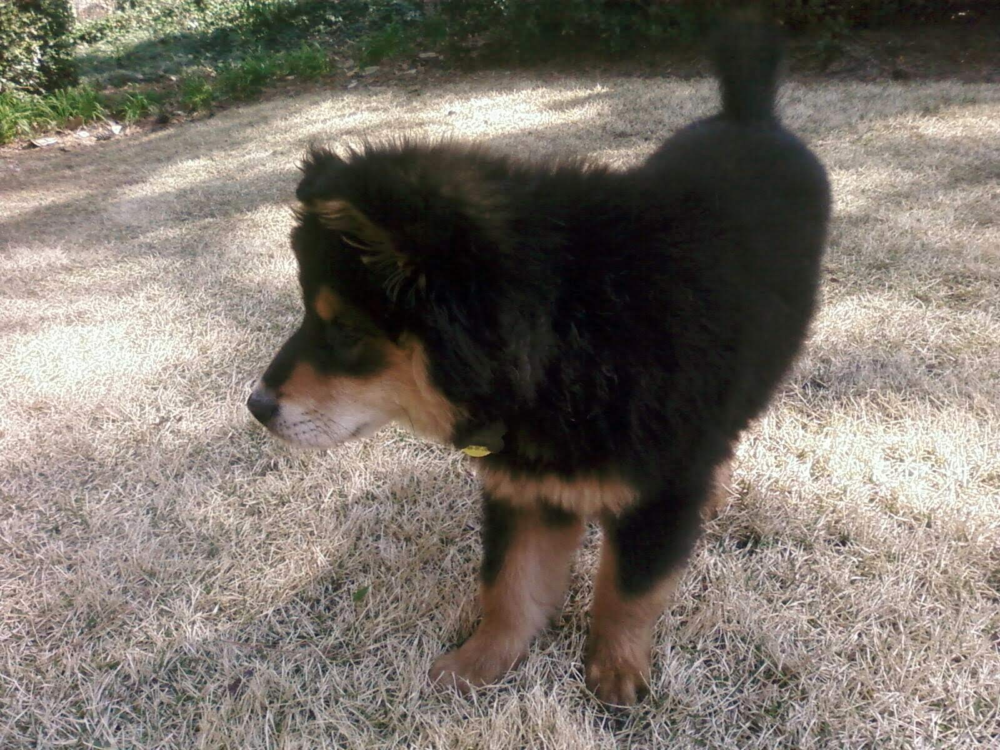
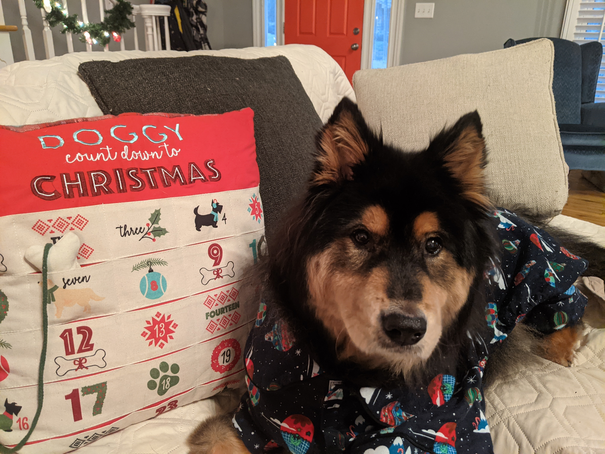
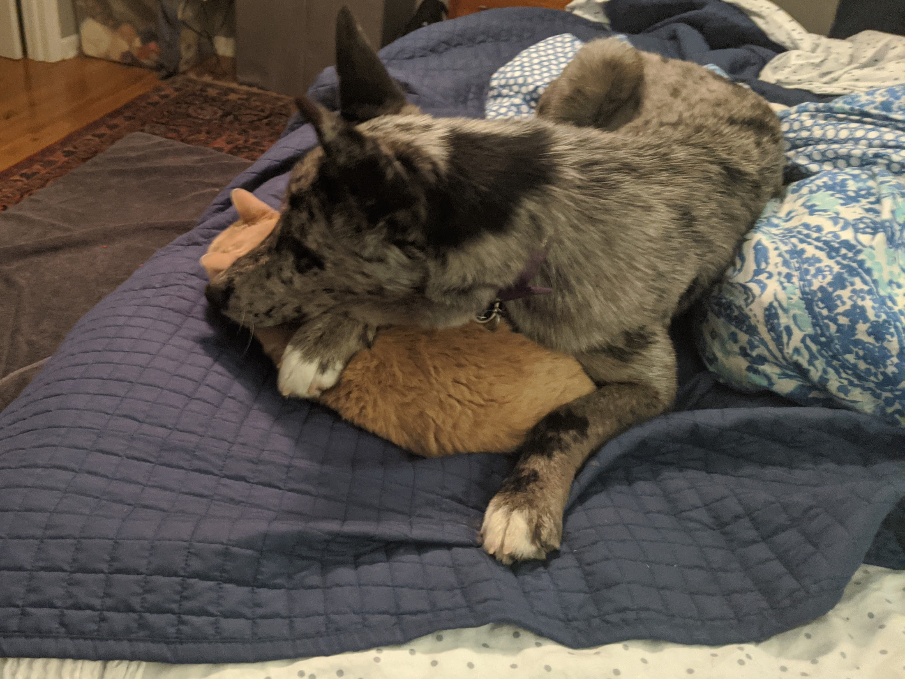
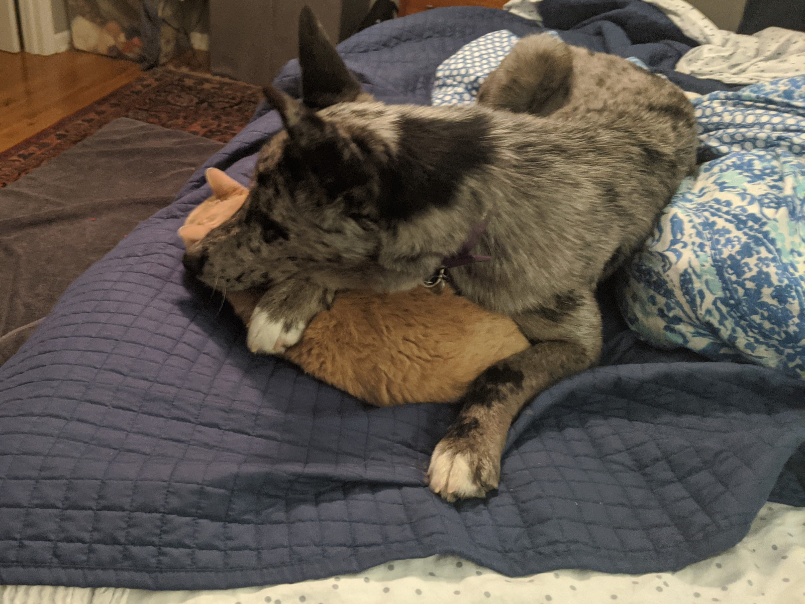

My junior year of college, I visited the Howell Mill Humane Society to play with the puppies... famous last words! There was a litter of 6 Chow Chow/Bernese Mountain Dog mix puppies that looked like little cotton balls with legs. When I visited their pen, Baloo jumped into my arms. He weighed 9.5 pounds when I brought him home. Fifty pounds and 13 years later, we're still inseparable.
 After our honeymoon, Adam and I decided (mostly I decided) it was time for another dog. Why not bring out animal total up to an even four? Pet adoption has evolved quite a bit since 2008; I first saw Mouse on Pet Finder and immediately fell in love with her big ears. After writing some lengthy emails to Fairy Godmother Dog Rescue to confirm that Mouse was sweet and submissive enough for Baloo to tolerate living with her, Adam and I drove to Alabama to bring her home.

Baloo has really been pretty tolerant, even in the beginning when she liked to sit on him (and the cat, and us)
 

But everything gets better with time!

© 2021 Lab 2 Demo